Závody, soustředění, brigády a všechno kolem kanálu. Příspěvky píšou trenéři a členové klubu.

O prázdninách jsme měli tu příležitost pořádat mezinárodní závod ze série ECA Junior Slalom Cup za účasti mladých slalomářů z mnoha zemí světa. Závodníci na trati…

Areál Lídy Polesné v Českých Budějovicích hostil o víkendu 23. a 24. května 3. a 4. závod Českého poháru žáků ve vodním slalomu. Oba závodní dny provázelo krásné…

Domácí sezóna vodního slalomu odstartovala dvěma závodními víkendy na umělé slalomové dráze v pražské Troji. Původně se měl 1. závodní víkend uskutečnit na Trnávce,…
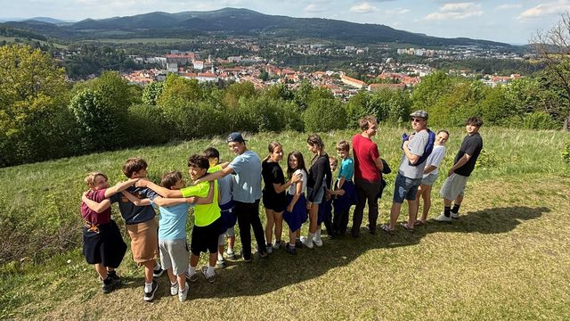
O víkendu 9. a 10. května 2026 patřila Vltava v Českém Krumlově u loděnice SK Vltava vyznavačům divoké vody. Na programu byl Krumlovský sprint , Slalom o pracku…
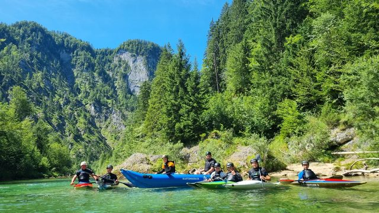
Sportovní klub vodní slalom České Budějovice obdržel od NSA dotaci Můj klub 2026 ve výši 125 600 Kč na podporu sportovních aktivit dětí a mládeže ve věku 4-19 let, na…
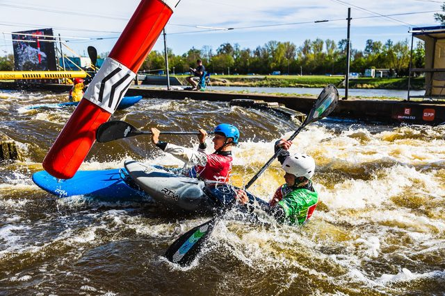
Konec dubna (25. a 26. 4. 2026) patřil v domácím kalendáři jedné z divácky nejatraktivnějších a nejtvrdších disciplín – kajak krosu (závody X1). První až třetí závod…
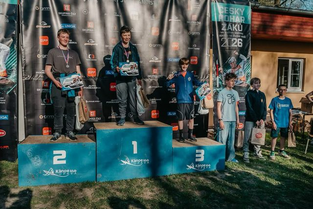
Poslední dubnový víkend (25. a 26. dubna 2026) se pozornost mladých vodních slalomářů přesunula na severní Moravu. Umělá slalomová dráha v Opavě hostila 1. a 2. závod…
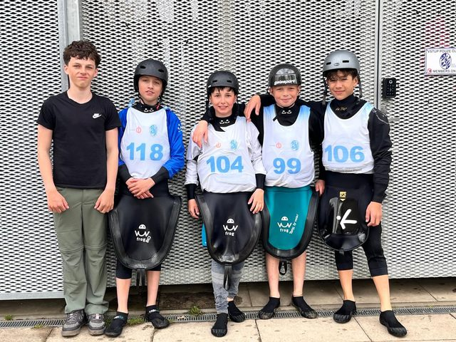
Nová sezóna odstartovala a pro závodníky z SKVS České Budějovice nemohla začít lépe. Tradiční Jarní slalomy, které se konaly 18. a 19. dubna 2026 v Areálu Lídy Polesné,…
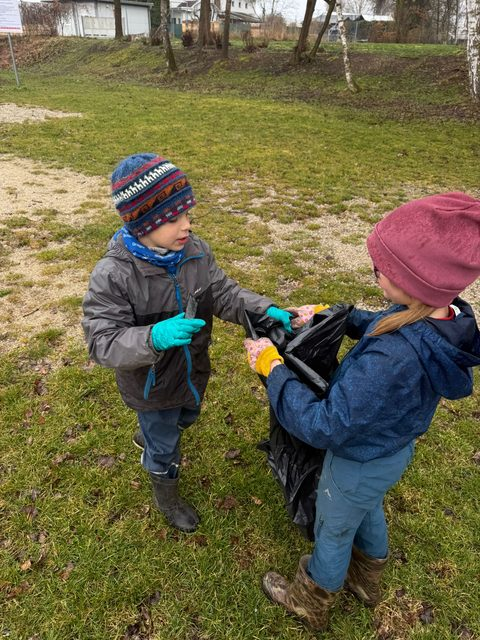
Členové a přátelé Sportovního klubu vodního slalomu České Budějovice (SK VS ČB) se zapojili do celorepublikové akce Ukliď Česko. Letos jsme do toho šli s jasným a…
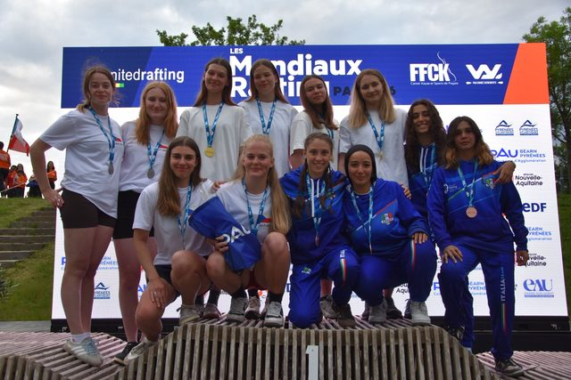
Fantastický úspěch pro český vodní sport a obrovská hrdost pro náš oddíl! Závodnice SKVS České Budějovice Rozárie Švehlová zazářila na Mistrovství světa v raftingu do 23…
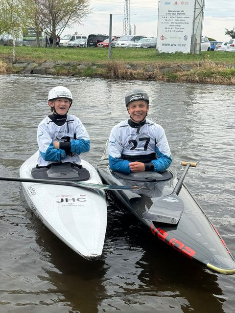
Náš klub nežije jen tvrdými tréninky na vodě, ale především radostí z úspěchů našich mladých talentů. V poslední době se hned trojice našich nadějných sportovců dočkala…
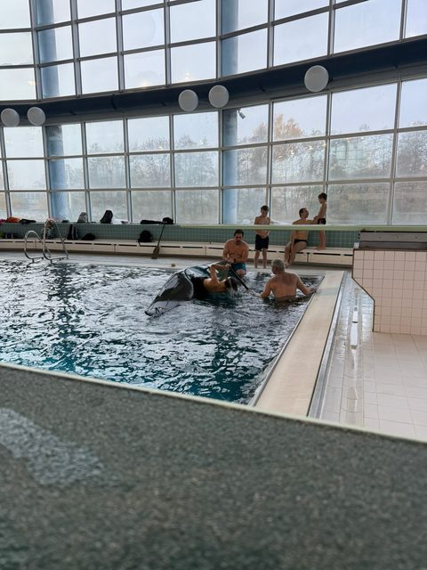
Zima už pomalu ztrácí na síle a s blížícím se jarem se chýlí ke konci i naše náročná zimní příprava. Poslední měsíce jsme ale rozhodně nezaháleli. Místo divoké řeky jsme…

Ve dnech 2. až 15. března proběhlo tradiční jarní soustředění, na kterém náš klub spojil síly se Sportovním centrem mládeže (SCM). Výprava vyrazila do oblíbené a…
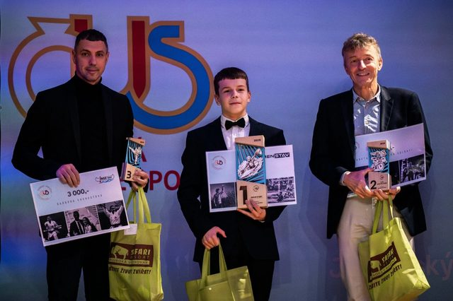
V kulisách Jihočeské filharmonie se ve středu 28. ledna 2026 konalo slavnostní vyhlášení prestižní ankety Sportovec okresu České Budějovice. Králem hlavní kategorie…
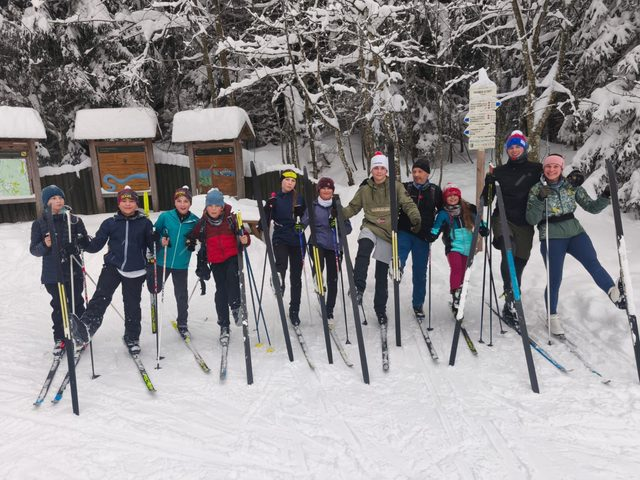
Některé tradice se prostě nemění a byla by škoda je porušovat. I letos naše kroky (a lyže) vedly na šumavské pláně. Opět jsme vyrazili na Kvildu, která nás přivítala…
Zimní období je v našem klubu vždy nabité aktivitami. A nejinak je tomu letos! Zimní příprava dětí a mládeže je sestavená tak, aby byla pestrá, zábavná a zároveň…
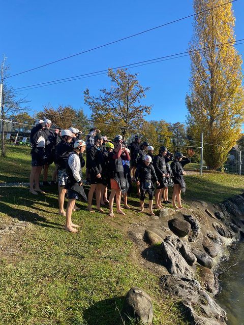
Skupina našich talentovaných závodníků – Matěj Krejčí, Adam Rezek, Lenka Petrová a Martin Petr – absolvovala společně se SCM náročné 13denní soustředění ve Francii.…
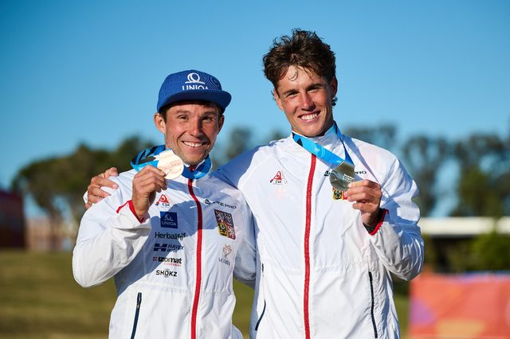
Český vodní slalom má nového hrdinu. Jakub Krejčí, odchovanec našeho klubu, předvedl na Mistrovství světa životní výkony, díky nimž se zařadil mezi absolutní světovou…
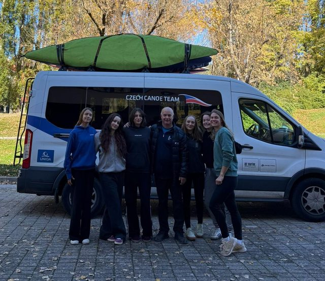
Naše trenérka Jana Matulková spolu s mladou závodnicí Johanou Štindlovou absolvovaly třítýdenní stáž ve španělském La Seu d’Urgell, významném světovém centru vodního…
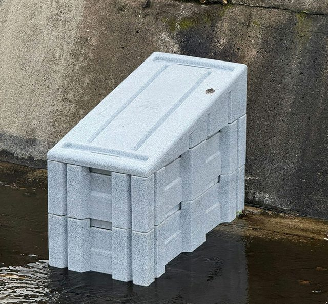
Tento systém používáme od roku 2012. Čas nezastavíme a materiál se opotřebovává. Díky dotaci od Jihočeského kraje máme možnost uskutečnit částečnou výměnu překážek v…
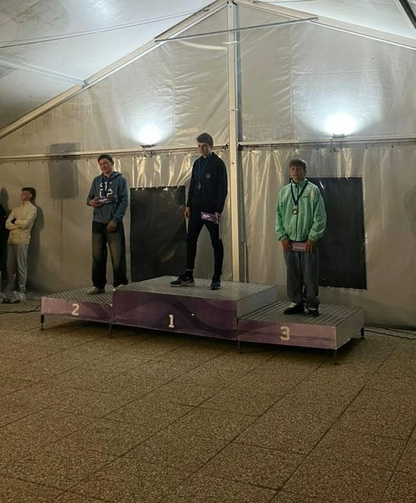
Závodní série Olympijských nadějí v Bratislavě byla pro náš klub krásným vyvrcholením sezóny. Do slovenské metropole jsme vyslali dva zástupce, kteří se v silné…
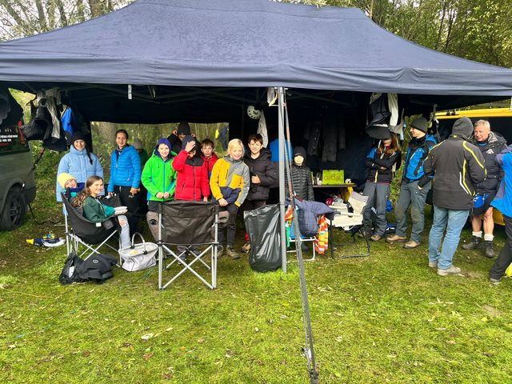
První říjnový víkend patřil tradičně Klatovským slalomům, které se letos staly zároveň posledními závody sezóny pro naše děti. Atmosféra byla od začátku nabitá emocemi –…
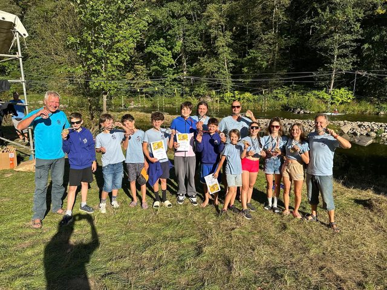
O víkendu se v Táboře konal Přebor Jihočeského kraje a naši závodníci se zde předvedli ve skvělé formě. Za krásného počasí dokázali vybojovat řadu cenných umístění a…
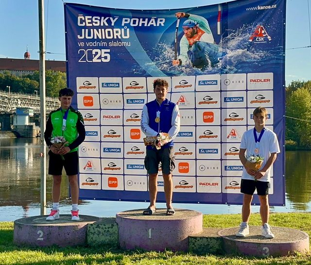
Poslední dva závody letošní série Národních kontrolních závodů hostila Roudnice nad Labem. Na start se postavili jak reprezentanti dospělých kategorií, tak i mladí…
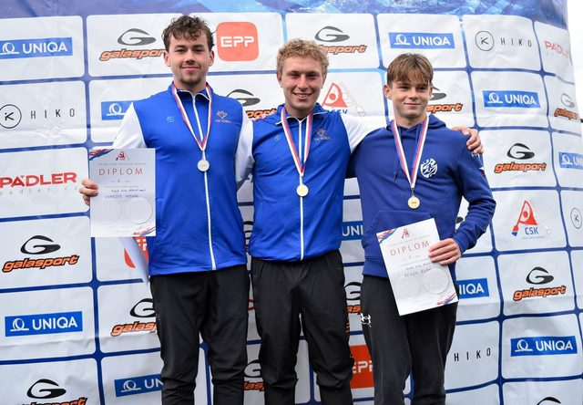
O víkendu proběhlo ve Veltrusech Mistrovství České republiky dorostu, které se skládalo ze tří částí – slalom, kajak kros individuál a kajak kros. Naši závodníci se…
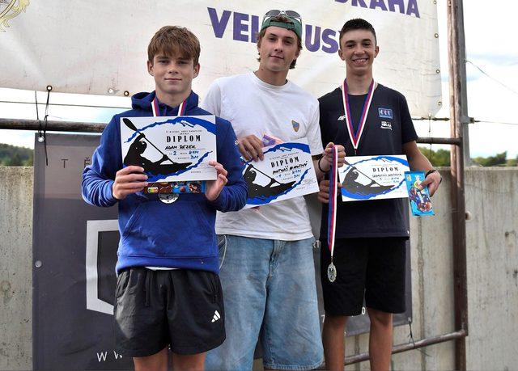
Poslední víkend v srpnu patřil tradičnímu Memoriálu J. Froňka. Závod je známý svou náročností, především pro naše juniory, kteří se museli poprat s těžkou tratí i…
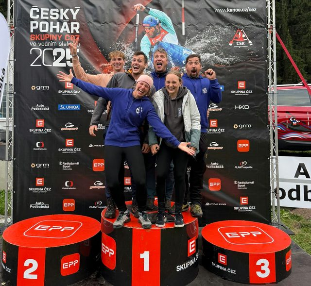
MČR na Lipně Uplynulý víkend jsme měli tu čest pořádat Mistrovství České republiky ve vodním slalomu na Lipně. Akce proběhla ve skvělé atmosféře a naši závodníci…
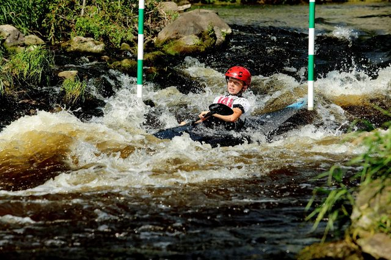
Benátky nás o víkendu přivítaly teplým počasím a skvělou atmosférou. Zájem o závody byl obrovský – limit startů se naplnil během necelého týdne od otevření přihlášek.…
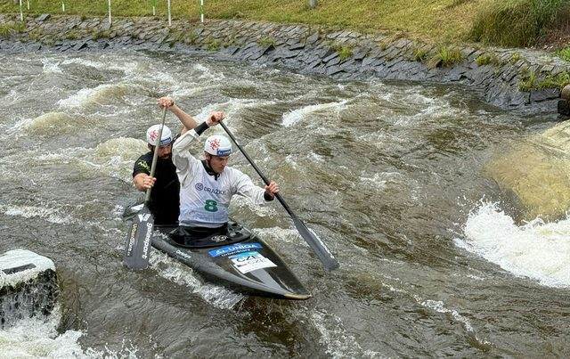
V Českém Vrbném neboli u nás se o víkendu 26.-27.7. konaly tradiční Letní slalomy, které opět přilákaly velké množství závodníků i diváků. Počasí nás sice několikrát…
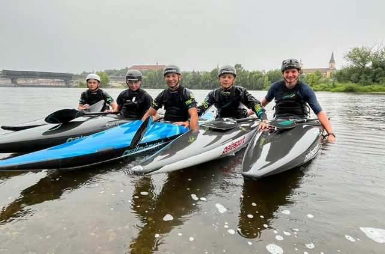
O víkendu se v Roudnici nad Labem konal další díl Evropského poháru – ECA Cup, který přilákal silnou mezinárodní konkurenci ve vodním slalomu. Závodu se zúčastnili i…
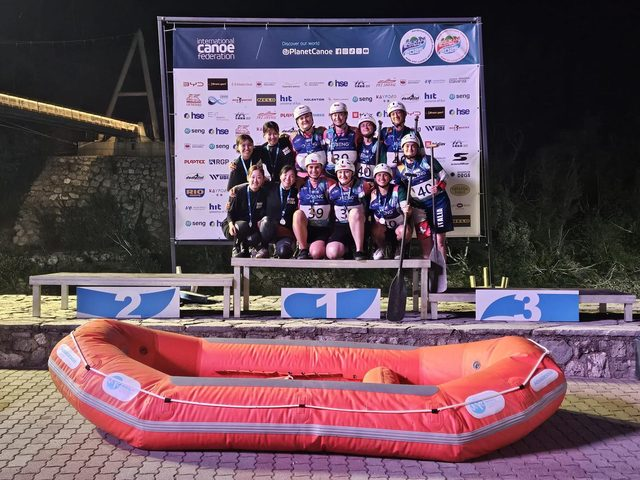
V úspěšné české posádce, která dosáhla na titul mistryň světa v raftingu na Mistrovství světa juniorů a U23 ve Slovinsku, nechyběla naše závodnice Rozárie Švehlová! Do…
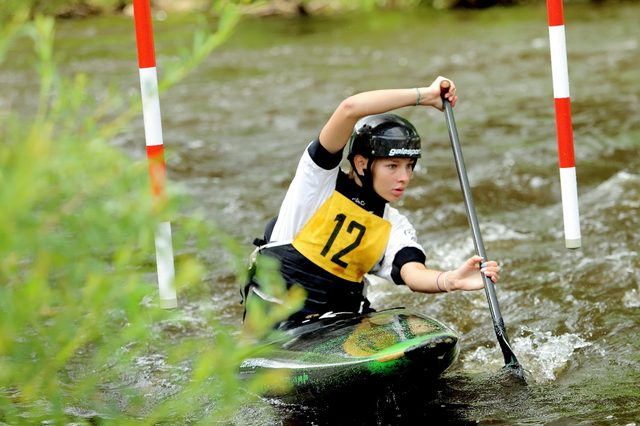
O víkendu 28.–29. června jsme se zúčastnili veřejných závodů ve Strakonicích. Trať byla lehčí, určená spíše pro začátečníky a mladší závodníky, ale právě proto byla…
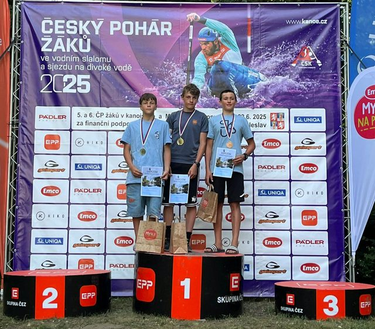
V Brandýse nad Labem se o víkendu uskutečnilo další kolo Českého poháru žactva ve vodním slalomu. Závody provázelo slunečné počasí, které spolu s náročnými tratěmi…
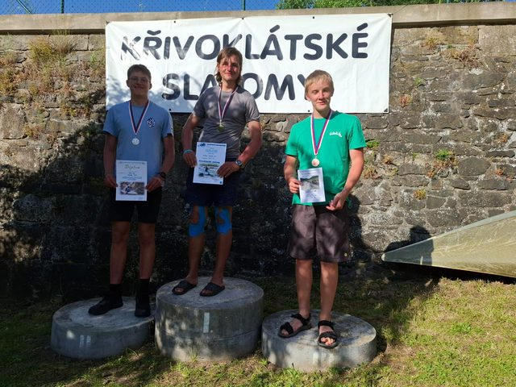
Veřejný závod Křivoklát se odehrál za teplého počasí, které přálo všem závodníkům. Pro nováčky šlo o seznámení s další tratí, pro zkušené pak o příležitost změřit síly s…

O víkendu proběhl na naší domácí trati v Českém Vrbném další Národní kontrolní závod (NKZ). Ačkoliv počasí nebylo zdaleka ideální – trať provázely přeháňky i proměnlivý…

Uplynulý víkend se na řece Otavě v Sušici uskutečnily veřejné vodácké závody. I přes nízký stav vody se naši závodníci dokázali vypořádat s náročnými podmínkami a…
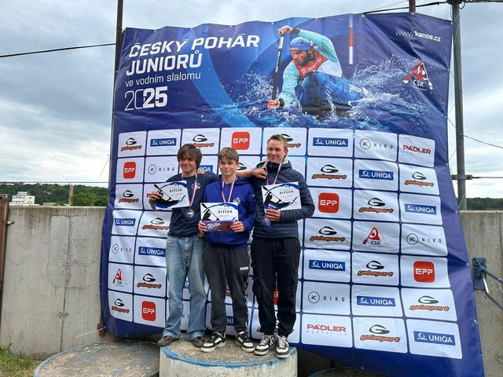
O víkendu se ve Veltrusech uskutečnil Národní kontrolní závod (NKZ), který byl zároveň závěrečnou nominací do juniorské reprezentace ve vodním slalomu. Závodníci se…
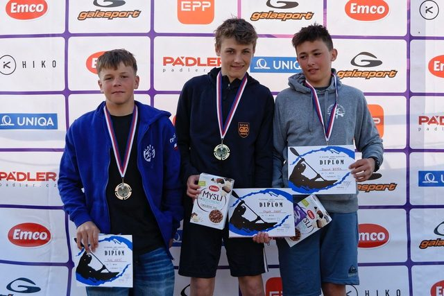
O víkendu 3.–4. května se ve Veltrusech uskutečnily další dvě kola Českého poháru žáků, kam byl závod přesunut z původně plánované Opavy. I přes změnu lokace se závodní…
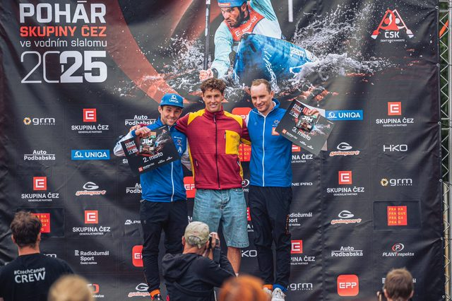
O uplynulém víkendu hostila pražská Troja 3. a 4. závod Českého poháru ve vodním slalomu, které zároveň uzavíraly sérii nominačních klání pro letošní reprezentační…
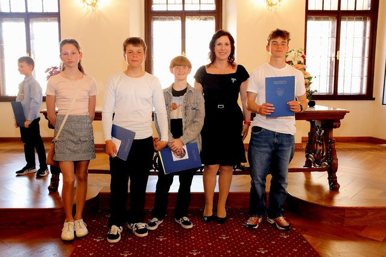
Paní primátorka Českých Budějovic přivítala mladé sportovní talenty, kteří úspěšně reprezentovali město na Olympiádě dětí a mládeže (ODM). Ocenění za skvělé výkony a…
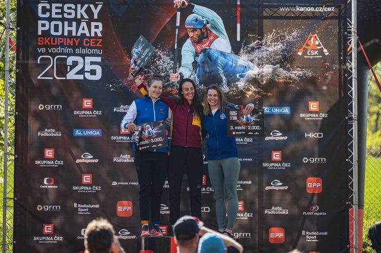
Uplynulý víkend se na Trnávce u Želiva uskutečnily první dva závody Českého poháru ve vodním slalomu, které zároveň sloužily jako nominační klání do seniorské, U23 a…
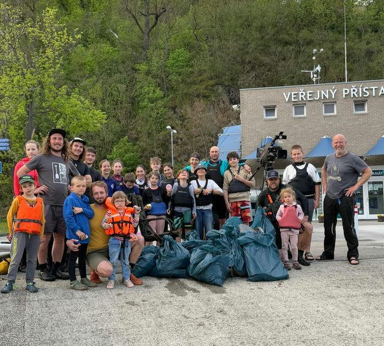
V úterý 22. dubna jsme společně oslavili Den Země tím nejlepším možným způsobem – aktivním přispěním k čistší přírodě. Pod hlavičkou akce „Uklízíme řeku Vltavu – přidej…
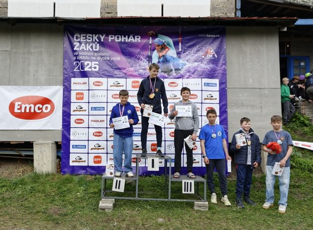
O víkendu 19.–20. dubna se v České Lípě uskutečnily první dva závody letošního Českého poháru žáků ve vodním slalomu. Na startu nechyběla ani výprava z našeho oddílu,…
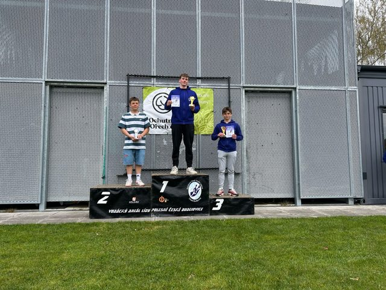
Během víkendu od 12. do 13.4. jsme uspořádali tradiční jarní slalomy přímo na našem domácím kanále. Pro mnoho z nás to byly první závody letošní sezóny a zároveň skvělá…
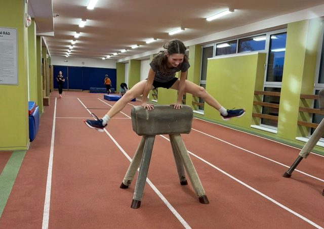
Pět měsíců tvrdé zimní přípravy je za námi a my se tedy můžeme zpětně ohlédnout za tím, co všechno jsme absolvovali, abychom byli co nejlépe připraveni na novou…
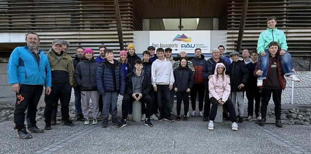
Jarní příprava ve francouzském Pau se skupinou SCM pod vedením Vládi Galušky, Oldy Webera a Karla Krejčího.
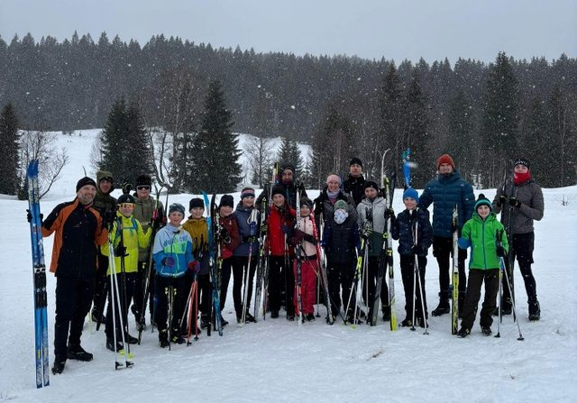
Za normálních okolností nás najdete spíše u vody, ale vzhledem k ročnímu období, jsme se rozhodli vyměnit lodě za běžky a vyrazit na Kvildu. Ve skupině 13 dětí, převážně…
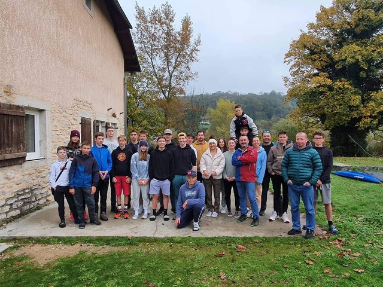
Po Emirátech jsme se lehce "ohřáli" v Česku a vyrazili jsme na další soustředění. Tentokrát do francouzského Pau. Účelem soustředění bylo vypilovat techniku a…
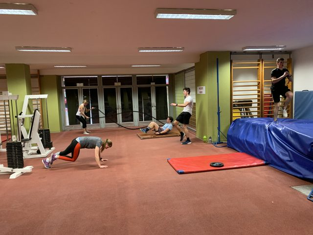
Každoročně nám zimní příprava začíná v říjnu, kde začínáme budovat kondičku na následující závodní sezonu. Pro tento rok jsme měli možnost být pod dohledem holek z…
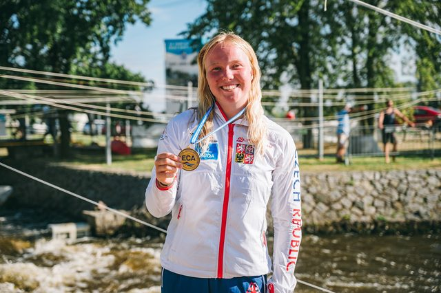
Olga Samková vybojovala na evropském juniorském šampionátu čtyři medaile.
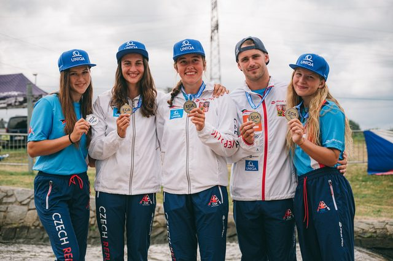
Čeští slalomáři na domácím šampionátu září. V Českých Budějovicích přidali do sbírky dalších pět medailí.
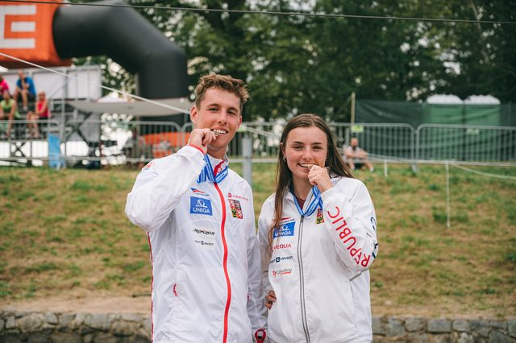
Další dva tituly a stříbro pro český tým!
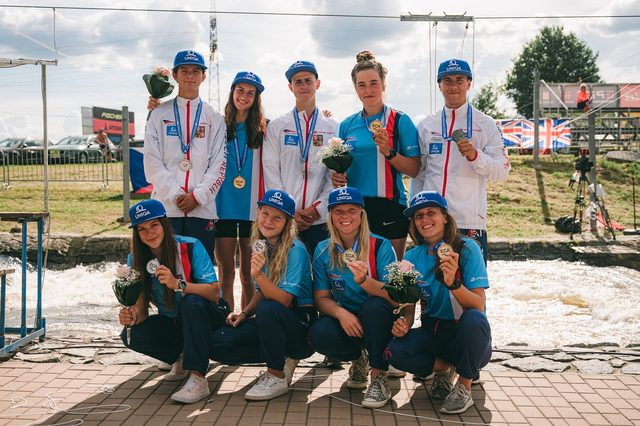
Druhý den na evropském šampionátu juniorů a závodníků do 23 let ve vodním slalomu přinesl českému týmu další medailovou radost. Pro nejcennější kov v závodě hlídek si…
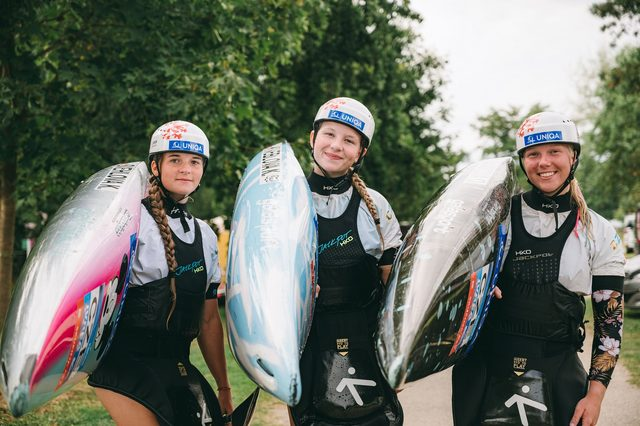
První medaile pro český tým! Klára Kneblová, Kateřina Švehlová a Olga Samková jsou juniorskými mistryněmi Evropy v hlídkách.
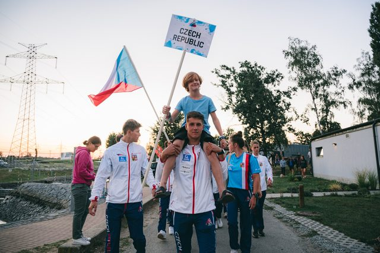
Vodácký areál Lídy Polesné se tento týden promění na dějiště evropského šampionátu juniorů a závodníků do 23 let ve vodním slalomu.
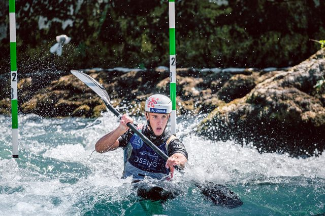
Už příští týden startuje mistrovství Evropy juniorů a závodníků do 23 let ve vodním slalomu.
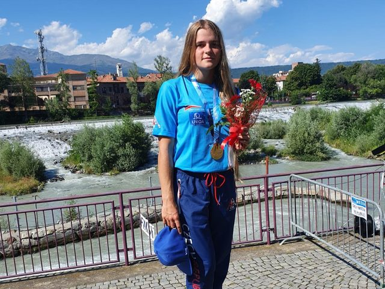
3 týdny do Mistrovství Evropy juniorů